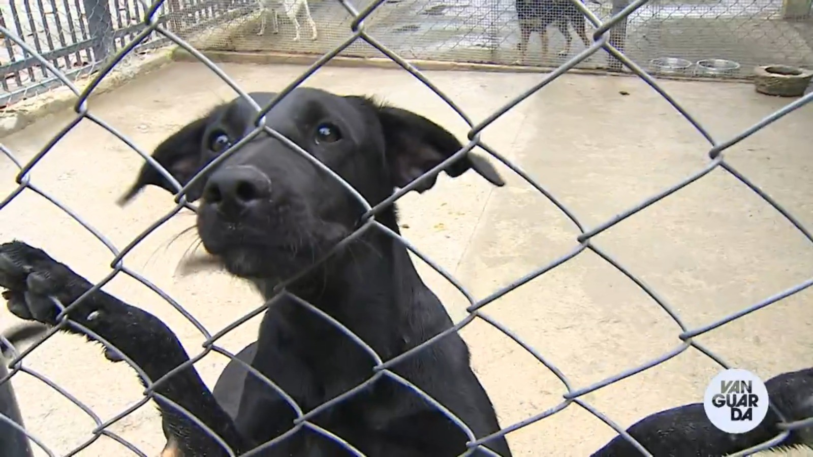

📄 CampanhasConheça ações que ajudam a proteger os animais |
|||
| 🏠 Início | 📄 Campanhas | 🐶 ONGs | ⚖️ Leis | 👤 Sobre | |||
Participe
|
Campanhas de Conscientização
Ações importantes
Como você pode participar?
Campanhas de Adoção A adoção é uma das formas mais eficazes de ajudar os animais. Ao adotar, você salva uma vida e ajuda a reduzir o abandono. Importância da sociedadeA participação da sociedade é essencial para combater os maus-tratos. Pequenas atitudes como denunciar, adotar e compartilhar informações fazem grande diferença. |
||